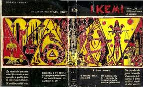
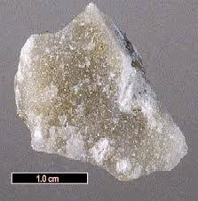
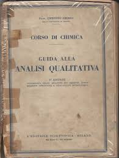

Prima di mettere alla prova dell'acqua il p-nitrobenzen-azo-1-naftolo, ho dato un'occhiata ad uno di quegli impagabili libri degli anni '50 che ho la fortuna di possedere: la "Guida all'analisi qualitativa" (1953) del professor Umberto Sborgi.
Alla voce "Magnesio", se si volesse essere ligi ai consigli di quell'emerito uomo di scienza, il reattivo andrebbe preparato sciogliendo 1 mg di Magneson II in 100 ml di NaOH 0,5 M... ma teniamo tutto ciò per la prossima volta!
Chi era Umberto Sborgi?
La bibliografia non è ricca, ma sufficiente a rendercene almeno un'idea sommaria.
Nato a Cecina nel 1883, fu emerito insegnante nelle Università di Parma e Milano; dal 1941 al 1953 fu direttore dell'Istituto di Chimica generale ed Inorganica in quest'ultimo Ateneo ed autore di numerose pubblicazioni.
A Lui successe nientemeno che il celebre professor Lamberto Malatesta, anch'esso autore di libri sui quali avrebbero poi studiato generazioni di futuri chimici.
A proposito del nostro Umberto, ho scoperto recentemente con molta e piacevole sorpresa che è stato autore anche di una singolare favola scientifica pubblicata nel 1949 (al prezzo di 85 lire!) da titolo "I Kemi"; nel libro si narra di un immaginario popolo, i Kemi appunto, che, distaccatisi ed isolatisi dall'umanità da un migliaio di anni, ha proseguito un percorso scientifico, politico e sociale costruito sul rispetto per la natura, il pensiero, il corpo, la sottile creatività individuale. Con una buona dose di tecnica, naturalmente!
Conoscendo l'Autore, il solo titolo del libro è tutto un programma!

Sborgi, fra le altre cose, fu particolare studioso dei composti del boro riguardo le emanazioni geotermiche della Toscana ed ha avuto anche il notevole onore di aver dedicato a suo nome un minerale, che ovviamente si chiamerà... Sborgite!
Si tratta di un raro (si trova a Larderello e nella Death Valley) borato di sodio di formula Na[B5O6(OH)4]·3H2O, contenente l'anione pentaborato [B5O6(OH)4]−.

Infine l'immagine del libro, talmente vissuto (dentro e fuori) da renderlo quasi impresentabile.
Ha perfino degli orrendi rinforzi di nastro adesivo degli anni '60, quando il medesimo si chiamava "carta gommata".
Ma che soddisfazione NON vedere quella triste grafica di certe copertine, oggi tanto di moda (magari quella con mezza beuta e l'alambicco stilizzato... o la molecola fatta con le palline...)!
Probabilmente mi è così caro anche per l'assenza di questi "artistici" particolari.
